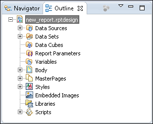
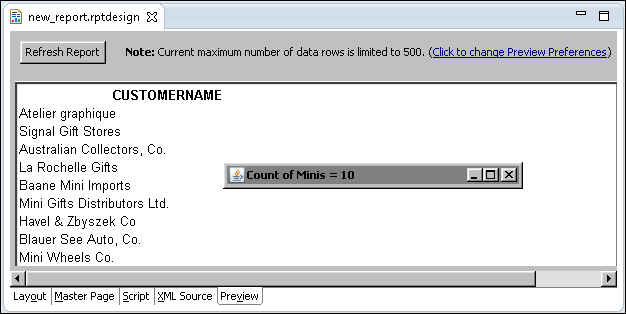

To display the count of customers with the string Mini in their names, insert code in a method that runs after the processing of all the rows in the list. One logical place for this code is in the ReportDesign.afterFactorymethod.


If you do not see the Count of Minis window, look for it behind the Eclipse window. If the Count of Minis window does not appear, the most likely reason is a scripting error caused by an error in one of your code entries.
If you suspect that a scripting error occurred, scroll to the bottom of the report where all scripting error messages appear. In most situations, there is a brief error message next to a plus sign ( + ). The plus sign indicates that there is a more detailed error message that is only visible after you expand the brief error message. To expand the brief error message, choose the plus sign. Scroll down to see the more detailed error message.